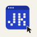
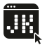
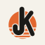
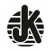
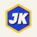
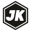

Concept 1
The build
A browser window with JK laid in chunky blocks and a cursor on the corner: it says websites, built piece by piece.
From the research: Pixel-grid letters are a named 2026 trend because they stay sharp when tiny. Two colours, one quirk (the cursor).

Lockup
Actual sizes: 16, 32, 64 px
The 16px tile is the tiny cut from the kit: the tile and letters only, as a favicon would be.
Circle crop (profile picture)

One colour

Concept 2
Desert local
A Scottsdale sunset behind a rounded JK whose hook turns up like a saguaro arm: local and warm, and still clearly your initials.
From the research: Warm, human marks are in, and the guides say to stop at two colours. This is one sunset orange plus ink.
Lockup
Actual sizes: 16, 32, 64 px
Circle crop (profile picture)

One colour

Concept 3
Bold badge
A hex-nut badge in cobalt and marigold with a heavy slanted JK: loud, simple, and made for a profile picture.
From the research: Badges and seals with chunky lettering are back. It is built to work as an avatar first, as the guides advise.
Lockup
Actual sizes: 16, 32, 64 px
Circle crop (profile picture)

One colour

